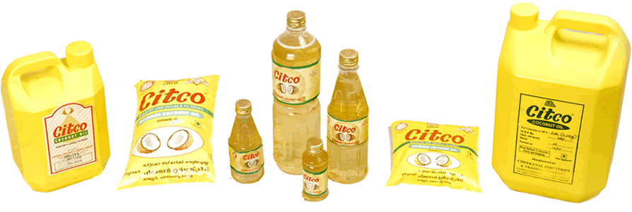

Traditional Kerala Coconut Oil Since 1954
Trusted by generations for over 65 years. Pure, roasted and double-filtered coconut oil.

CITCO Brand
Citco (Cheekanal Industries and Trading Company) is a leading producer of roasted and double filtered premium coconut oil, based in Pathanamthitta, Kerala, India. Our oil is 100% pure, with no Additives and no preservatives, and holds the highest Agmark Grade 1 certification. We can supply our products within India and abroad and welcome your enquiries.
Certifications
Our oil is tested regularly at the Kerala State Agmark grading laboratory, approved and assured by the Government of India. This gives you an independent verification of the purity and quality of our product.
- Since 1954
- Third Generation Family Business
- AGMARK Grade 1
- ISO • FSSAI • ZED • Nanma
Featured Products
Citco products are available at many retailers around Kerala. You can also purchase directly from our factory in Omalloor, where we are always pleased to receive so many of our regular customers, both wholesale and retail.
Manufacturing Highlights
Traditional steam roasting, mechanical pressing and double filtration for premium quality.